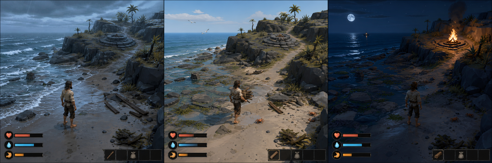

人负责方向
玩家幻想、审美判断、真实感受、不可跨越的边界，以及是否改变游戏承诺。
RESEARCH 08 · WORKFLOW REPLICATION
四个案例证明了风格化浏览器游戏可以通过概念、切片、试玩反馈和持续检查点逐步形成。本页把这些证据拆开，再用一个同等规模的样例练习整条流程。
01 · UNDERSTAND THE METHOD
每一阶段都规定：人决定什么、Codex负责什么、产生什么文件，以及用什么证据才能继续。
用同一镜头与视觉语言呈现起点、第一次满足和发展状态。
只做5–10分钟，证明镜头、核心动作、选择、压力和回报。
把感受翻译成一个最大的玩家可见偏差，只修改一个检查点。
保存游戏承诺、边界、版本和验收规则，让下一轮从已验证成果继续。
公开最新版本、当前问题、接下来三项和人能读懂的变更记录。
玩家幻想、审美判断、真实感受、不可跨越的边界，以及是否改变游戏承诺。
技术方案、项目文件、单次检查点、测试、试玩验证、版本记录、部署和继续选择。
真实运行画面、输入操作、修改前后对比、测试结果、线上版本和更新日志。
02 · READ THE EVIDENCE
它们不是四次独立的“AI一键生成”，而是四种不同的检查点成长路径。共同局限是风格化、浏览器优先和资产复杂度受控。
强项：完整战斗循环与直接操作。
局限：区域、角色与动画仍是受控规模。
强项：背包、装备、分解与持久进度。
局限：系统深度更多由界面承载。
强项：灯光、录像感和精确反馈塑造氛围。
局限：交互与空间广度不是主要证明对象。
强项：状态成长、建造反馈与昼夜回报。
局限：居民、经济和地图规模仍然简化。
3D ACTION ADVENTURE
最接近“先做核心操作，再通过长期目标持续打磨”的完整证明：移动、攻击、闪避、职业和多个区域都围绕直接游玩展开。


案例图片与事实依据来自 The Infinite Build 原始页面的“Concept → implemented”和“Games behind the workflow”部分；图片不可用时不影响分析正文。
03 · REPLICATE WITH ONE SAMPLE
保留海岛兴趣，但把技术、美术和时长约束在四个案例已经证明的区间，让我们只研究工作流本身。
玩家被困在一个风格化的小海湾，需要观察潮线，收集漂流木和火种，在部分路线被海水淹没前修复信号火。

同一海湾、冷湿天气、熄灭火台和孤立人物共同建立问题。
木材收集很清楚，但“读懂潮线”仍不够明显，是下一轮需要修正的核心。
火光与远船形成可读回报，且没有依赖复杂系统解释结果。
反向判断：这张图证明了概念生成能统一镜头、地形和状态语言；它没有证明人物移动、潮汐模拟、碰撞或点火循环已经可玩。用户已放行 Stage 02，这些能力现在由实时 3D 切片单独验证。
PLAYABLE SLICE 0.1进入《潮汐守望》实时 3D 海湾开始试玩 →STAGE 01 · CONCEPTS FIRST
玩家幻想、核心动作、海岛氛围、参考方向，以及明确不接受写实宣传图冒充可玩画面。
提出受控玩法系统，并生成起点、第一次满足和发展状态三张保持同一镜头的概念画面。
三张可玩画面概念、一页系统提案和明确的技术可实现性说明。
人确认镜头、比例、画风和三个状态；在确认前不得开始游戏编码。
我想用 The Infinite Build 的流程和你练习制作一个小型浏览器游戏。
游戏想法：玩家被困在一个风格化的小海湾，需要在夜色与涨潮前收集漂流木、修复并点亮信号火。
玩家幻想：从慌乱的漂流者变成能够读懂潮线并完成第一次自救的人。
核心动作：观察路线、移动、收集、选择是否冒险、交付资源并点火。
氛围：孤独但不绝望，低多边形海岸，冷蓝海水与暖橙火光形成对比。
目标：浏览器，桌面键鼠与触摸均可操作。
避免：写实宣传图、巨大岛屿、复杂生态、背包系统、科技树和无法由简单资产实现的画面。
先不要写游戏代码。请生成三个保持相同第三人称俯视镜头、比例、画风和HUD语言的可玩画面概念：
1. 刚抵达海湾、信号火熄灭；
2. 找到第一批漂流木、开始理解潮线；
3. 夜晚点亮信号火、远处船只作出回应。
同时说明最小玩法系统、需要的简单资产、浏览器实现边界和你主动舍弃的内容。展示后停止，等待我选择方向。04 · REASON BACKWARDS
反向反思可以防止把所有结果都归因于“AI能力”，也防止因为资产不足就误判工作流无效。
05 · LEARN, PROVE, REUSE
每一步都必须同时交付产品结果和学习结果。一次成功只能形成候选；在第二个不同样例中再次成立，才允许晋级为可复用方法。
学会用同一世界、同一镜头和三个进程状态检查 AI 是否理解玩法，而不只是生成漂亮图片。
学会把四案例的结构能力映射成最小闭环，也确认工作流借鉴不能代替角色、材质和动画资产生产。
下一步学习如何把一个真实感受翻译成单一检查点，并保留修改前后的同路径证据。
在反馈循环稳定后，继续研究长期目标、伴随页、历史读取和持续检查点。